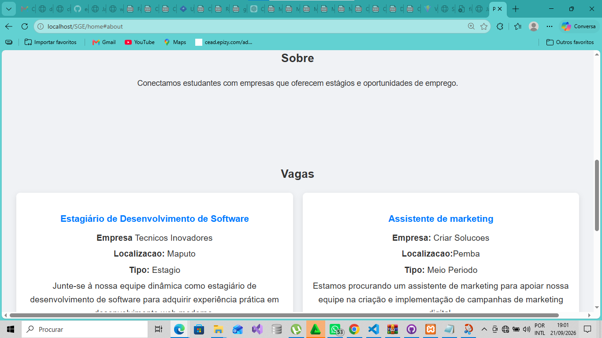

Informação dispersa
Empresas podem divulgar oportunidades através de diferentes canais, dificultando o acesso centralizado às vagas.
PROJECTO WEB · SISTEMA DE GESTÃO ACADÉMICA
Plataforma Web concebida para aproximar faculdades, empresas parceiras e estudantes num ambiente digital centralizado para publicação, gestão e candidatura a vagas de estágio.

O SGE — Sistema de Gestão de Estágios — foi concebido como uma plataforma Web para facilitar a ligação entre instituições de ensino, empresas parceiras e estudantes interessados em oportunidades de estágio.
A solução organiza num único ambiente digital processos relacionados com o registo de entidades, publicação de vagas, candidaturas e acompanhamento administrativo, permitindo uma gestão mais estruturada das oportunidades de estágio.
Empresas podem divulgar oportunidades através de diferentes canais, dificultando o acesso centralizado às vagas.
As faculdades necessitam de mecanismos mais organizados para administrar e acompanhar os processos relacionados com estágios.
Os estudantes podem perder oportunidades quando não existe um canal único para consultar e candidatar-se a vagas.
A ausência de registos centralizados dificulta a consulta do histórico de vagas e candidaturas.
O SGE procura funcionar como um ponto de encontro digital entre três actores principais: faculdades, empresas e estudantes.
Reúne vagas, empresas, estudantes e candidaturas num único ambiente de gestão.
Facilita a descoberta de oportunidades por estudantes e a divulgação de vagas por empresas.
Disponibiliza ferramentas para a administração das entidades e dos processos associados aos estágios.
Estrutura o registo de vagas e candidaturas, permitindo consultar o histórico dos processos.
A estrutura funcional do sistema foi organizada em torno das seguintes entidades principais:
O projecto utiliza uma arquitectura MVC — Model–View–Controller — desenvolvida em PHP, com separação entre apresentação, controlo, lógica de dados e configuração da aplicação.
Responsável pela representação dos dados, acesso à base de dados e implementação de regras relacionadas com as entidades.
Camada responsável pela apresentação das interfaces públicas, administrativas e destinadas às empresas parceiras.
Recebe os pedidos, coordena o processamento das operações e estabelece a ligação entre as views e os models.
Organiza o encaminhamento dos pedidos através de rotas baseadas em URI.
A base de dados foi estruturada para suportar o registo das instituições, empresas, estudantes, oportunidades de estágio e respectivas candidaturas.
A minha participação esteve relacionada com a análise, concepção e desenvolvimento de componentes fundamentais da plataforma, incluindo a estruturação da aplicação e a implementação das suas principais áreas funcionais.

O SGE representa uma solução Web orientada à organização e centralização dos processos de gestão de estágios, com uma estrutura funcional baseada na ligação entre instituições de ensino, empresas e estudantes.